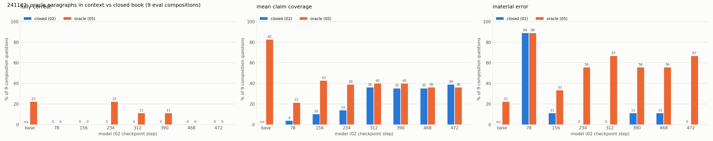
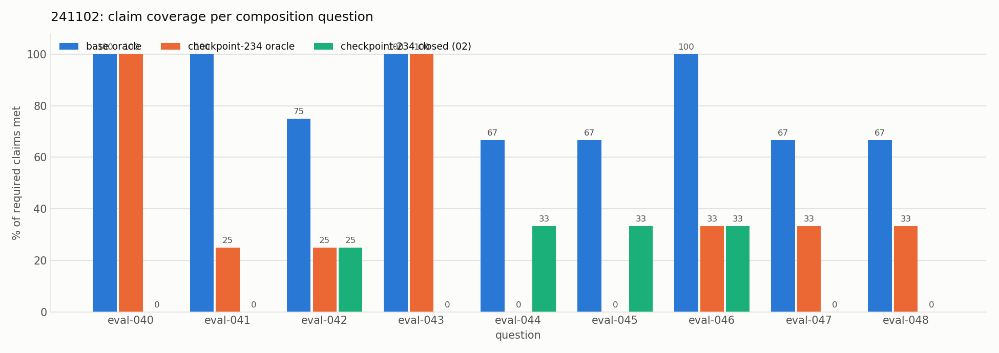

Experiment 05: Oracle: the needed paragraphs in the input
Tests with OPALX repo slice · field-solver / space-charge slice, 39 topics, judged by Claude Opus 5.5 against required and forbidden claims (README, source files)
1Summary
- Idea
- Put the trained paragraphs needed for each composition question into the input, and test whether the base model and the 02 checkpoints can compose an answer from them. No training.
- Upshot
- The base model uses the paragraphs (coverage 0.82); 02 stops using its input from checkpoint 78 on and recites one memorized paragraph. Fine-tuning damaged the use of context.
2Setup
- Model
- Base model (Qwen3-8B, 4-bit) and every checkpoint of experiment 02 (
runs/02/241102); no new training. - Configurations
- Inference as
scripts/evaluate.py: frozen Alpaca prompt, greedy, at most 768 new tokens. 02 was trained with an empty input field only, so the filled input is a new prompt shape for the adapter. - Training data
- None. The 9 composition questions of the eval split, each with its topics'
mechanismparagraphs (verbatim from 02's training data) in the input field (the oracle condition).
3Hypothesis
The model knows the atomic facts. On a question that spans several topics, it has to pick the right sentences from the relevant paragraphs and connect them, but it picks the single nearest paragraph (see experiment 04). Recombining facts learned separately inside the weights is a known weak spot of LLMs (two-hop curse, Physics of Language Models 3.1/3.2, reversal curse). Handing the model the facts separates the two possible causes:
- oracle high for base and 02: composing is not the problem, retrieving several facts from the weights is;
- oracle high for base but low for 02: fine-tuning damaged the use of context;
- oracle low for base too: the 8B model cannot compose these answers.
4Results
| model | oracle fully correct | oracle coverage | closed fully correct | closed coverage |
|---|---|---|---|---|
| base | 2/9 | 0.82 | n/a | n/a |
| checkpoint-78 | 0/9 | 0.21 | 0/9 | 0.04 |
| checkpoint-156 | 0/9 | 0.43 | 0/9 | 0.10 |
| checkpoint-234 | 2/9 | 0.39 | 0/9 | 0.14 |
| checkpoint-312 | 1/9 | 0.40 | 0/9 | 0.36 |
| checkpoint-390 | 1/9 | 0.40 | 0/9 | 0.35 |
| checkpoint-468 | 0/9 | 0.36 | 0/9 | 0.35 |
| checkpoint-472 | 0/9 | 0.36 | 0/9 | 0.39 |
The base model runs on into a reasoning continuation and hits the token limit on every question, so it is no clean reference, but it clearly reads the paragraphs.

Already at checkpoint 78 the adapter's oracle coverage drops from the base model's 0.82 to 0.21. Later it recovers to about 0.40, but only because the memorized paragraphs it recites overlap with the answers.

With the oracle the base model covers 67–100% of the claims on every question. Checkpoint 234 matches it only on eval-040 and eval-043 and covers 0–33% on the other seven, about what it covers without the input.
5Conclusion
The fine-tuned model never uses paragraphs 2–4 of the input, while the base model does: it loses the general ability to use its context, which is a big problem for an expert that another agent calls with context. By checkpoint 78 it has learned the output format and stops looking at the input. Then it slowly memorizes the 39 paragraphs and recites them; since the oracle paragraphs are exactly those memorized paragraphs, coverage goes back up. The oracle condition is now part of the standard pipeline (the oracle split and the context-use plot of every run).
Related: experiment 02 (the adapter) · experiment 02b (does sampling help?) · experiment 06 (training without an output format)